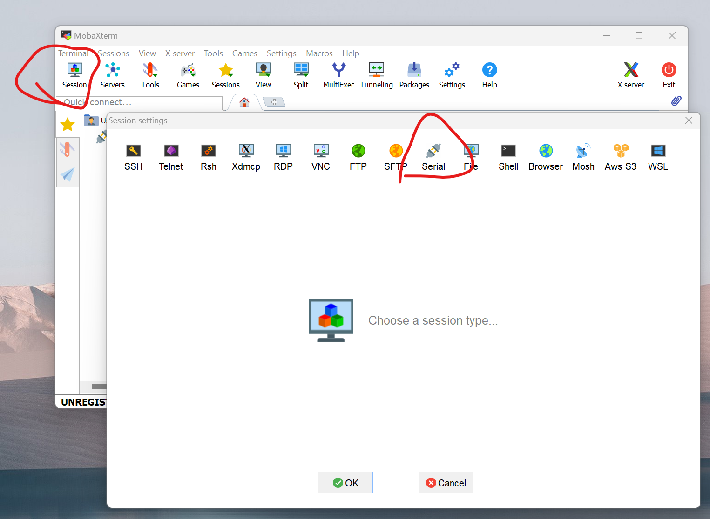
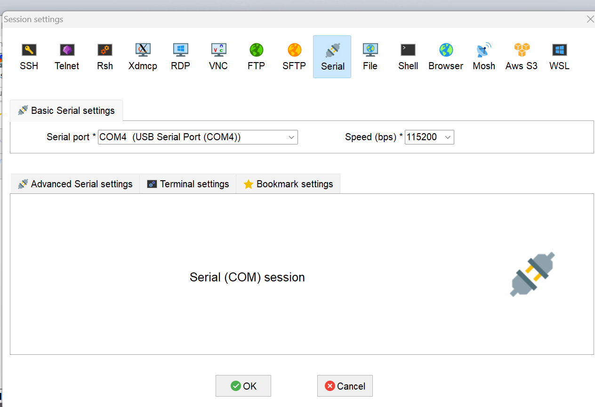
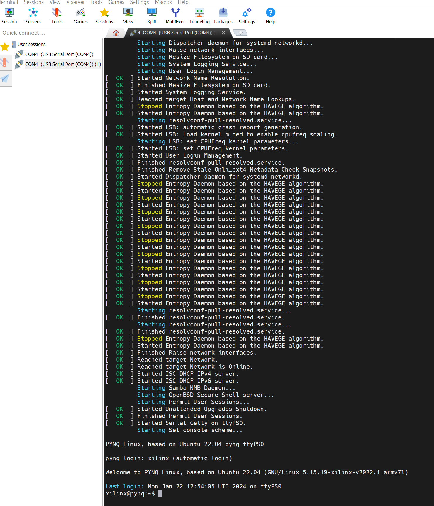
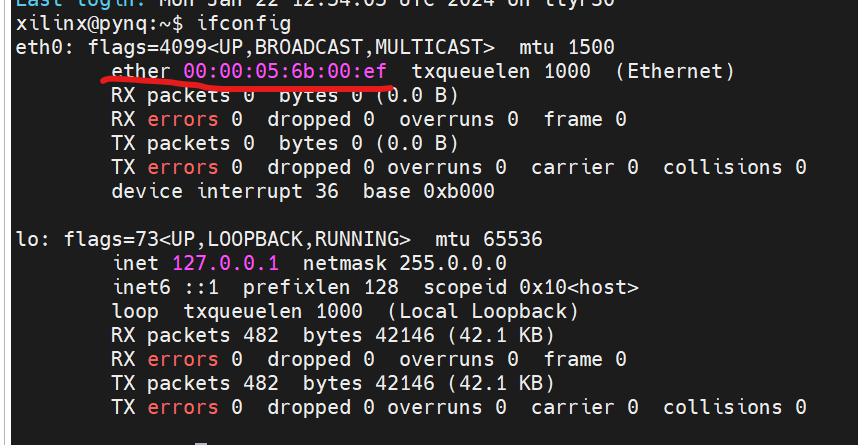
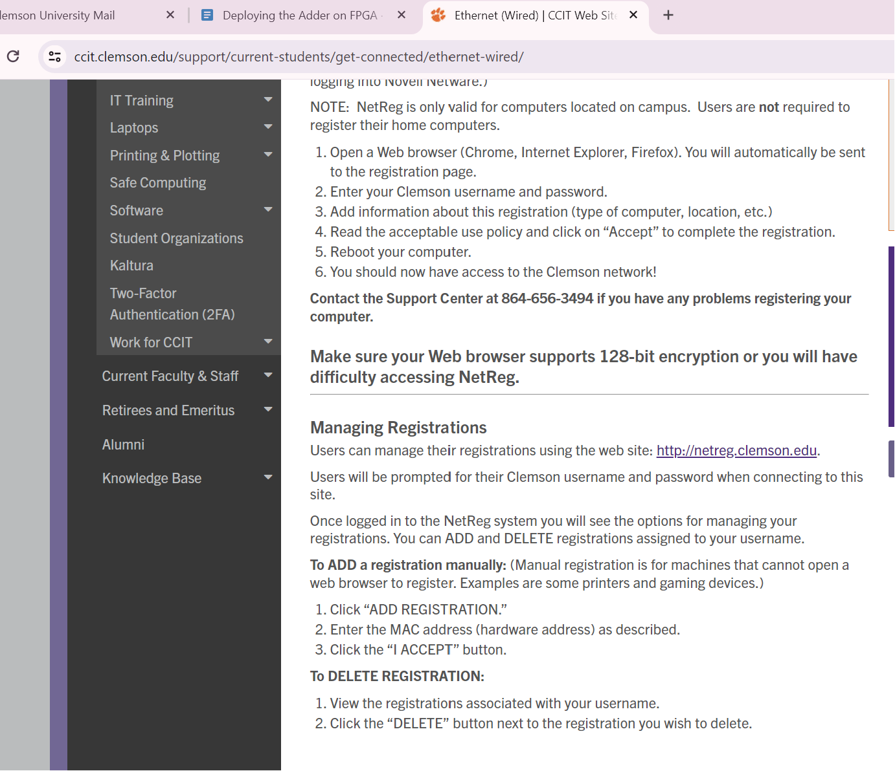
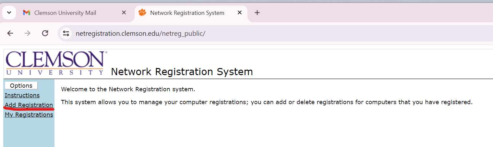
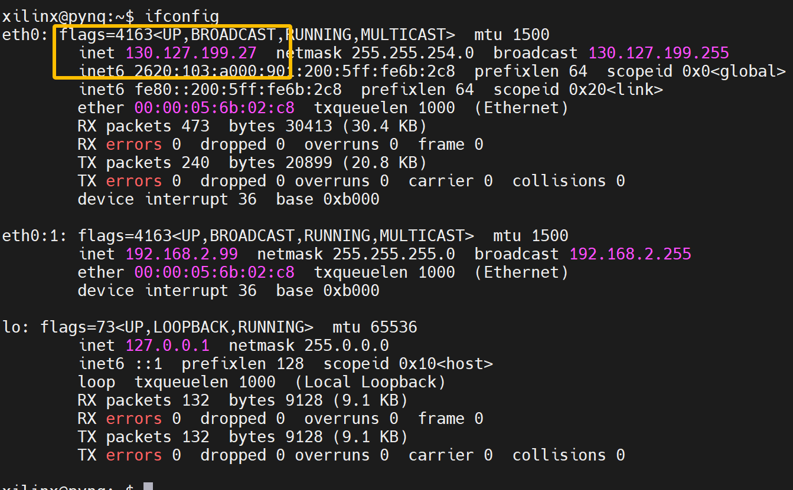
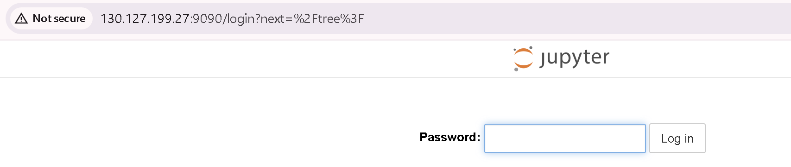
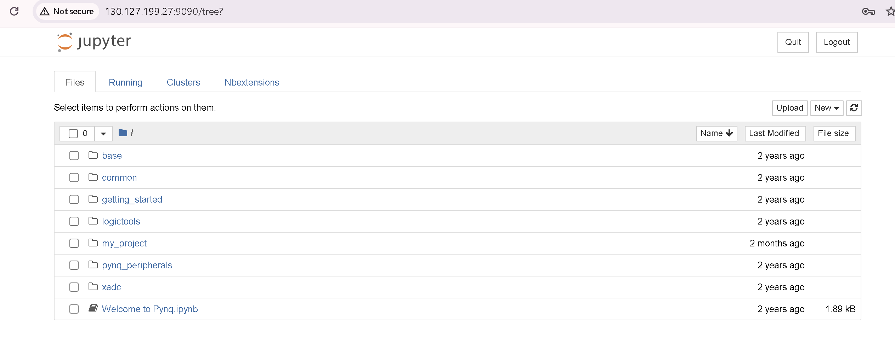
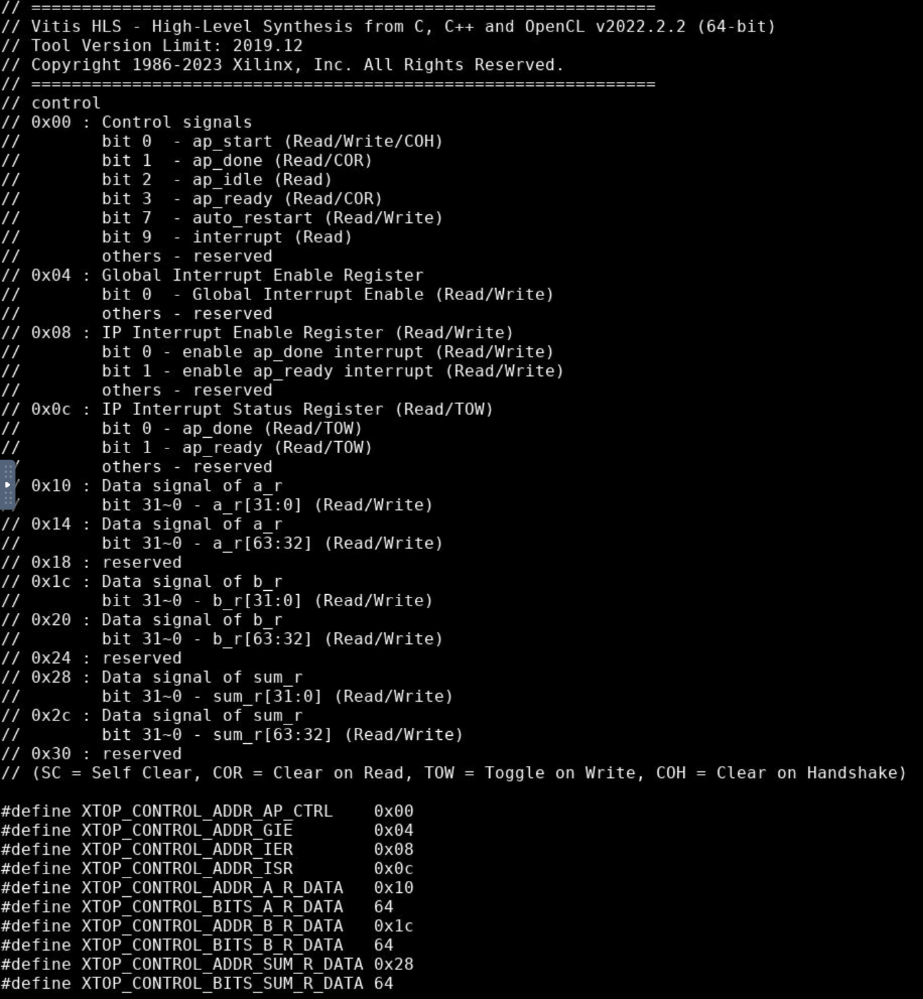

Deploying the Adder on FPGA
Step 1
If you have not used the PYNQ before, check the following link for setup:
[Optional]
(This section assumes familiarity with the official AMD documentation on PYNQ and successful completion of the setup described above.)
To enhance PYNQ’s accessibility and functionality, you can directly connect it to the Clemson Campus Network using an Ethernet cable. This approach offers two key benefits:
-
Remote access to PYNQ
-
Simultaneous internet connectivity and PYNQ configuration
Follow these steps to set up this connection:
- To begin, follow these steps to connect to the PYNQ board:
Connect one end of the USB cable to your PC or laptop, and the other end to the PROG - UART MicroUSB port on the PYNQ board. This cable serves two purposes: (It provides power to the board; It establishes a serial connection for communication) Download a serial terminal tool on your computer. MobaXterm is recommended, but you can use any similar software. If you use the MobaXterm, you’ll need to configure the following parameters and other software also need like below:


If we connect the PYNQ successfully, we will see like below:

-
Secondly, we need to know some information about the PYNQ-Z2 board by print
ifconfiglike below.
And we need to copy the address above.
-
Thirdly, we need to click the link for setup: -Clemson Ethernet
-
Then, click the link like below:


We must paste the MAC address in the Hardware Address. We can write something in the Description to mark our device.
- Lastly, if you’ve already set up your Ethernet connection (e.g., by connecting to Clemson’s Ethernet network), you can verify your connection and find your assigned IP address using the ifconfig command. Follow the steps below to ensure everything is properly configured and to check your IP address like below. (Hints: If you do not see your IP address, please wait a few seconds and try checking again. Sometimes it may take a moment for the network to assign an IP address after connecting the Ethernet cable.)

Once your Ethernet connection is set up and you have verified your IP address, you can proceed to access the entrance page by opening a Web Browser and enter the URL containing your IP address like 130.127.199.27:9090. When you press Enter, you should see the entrance page appear, confirming that your connection is properly set up.

Enter the correct password and click on “Login.” If the password is right, you will see the right page like below:

Accessing the school network through connecting to the school’s Ethernet cable is currently the most convenient way. Then even if we don’t have the board with us, we can still remotely access PYNQ by knowing the board’s IP address, provided that the board is connected to the school network and powered on.
Step 2
Before proceeding, it’s essential to familiarize yourself with the concepts of PYNQ, Jupyter Notebook, and Overlays via the website: PYNQ-Z2
If you already have a basic understanding of using Jupyter on these boards, start by uploading the .bit file and the .hwh file to Jupyter. Then, create a new .ipynb file in the same directory to write your script. -Overlay Tutorial
Step 3
Find the address offset of the memory ports (a, b, and sum, in this example). This information can be found in the xtop_hw.h file under solution1/impl/misc/drivers/top_v1_0/src directory.

Step 4
Below is the example Python host code to control the FPGA kernel.
import numpy as np
import pynq
from pynq import MMIO
overlay = pynq.Overlay('adder.bit')
top_ip = overlay.top_0
top_ip.signature
a_buffer = pynq.allocate((100), np.int32)
b_buffer = pynq.allocate((100), np.int32)
sum_buffer = pynq.allocate((100), np.int32)
# initialize input
for i in range (0, 100):
a_buffer[i] = i
b_buffer[i] = i+5
aptr = a_buffer.physical_address
bptr = b_buffer.physical_address
sumptr = sum_buffer.physical_address
# specify the address
# These addresses can be found in the generated .v file: top_control_s_axi.v
top_ip.write(0x10, aptr)
top_ip.write(0x1c, bptr)
top_ip.write(0x28, sumptr)
# start the HLS kernel
top_ip.write(0x00, 1)
isready = top_ip.read(0x00)
while( isready == 1 ):
isready = top_ip.read(0x00)
print("Array A:")
print(a_buffer[0:10])
print("\nArray B:")
print(b_buffer[0:10])
print("\nExpected Sum:")
print((a_buffer + b_buffer)[0:10])
print("\nFPGA returns:")
print(sum_buffer[0:10])